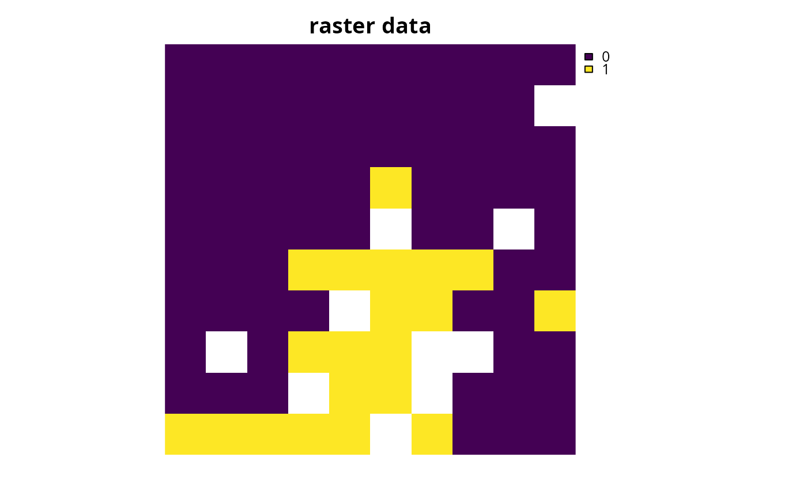
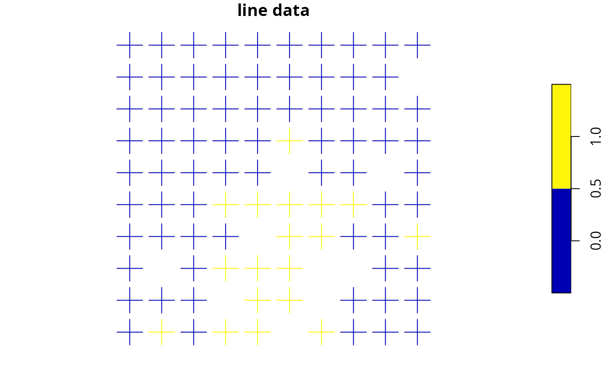
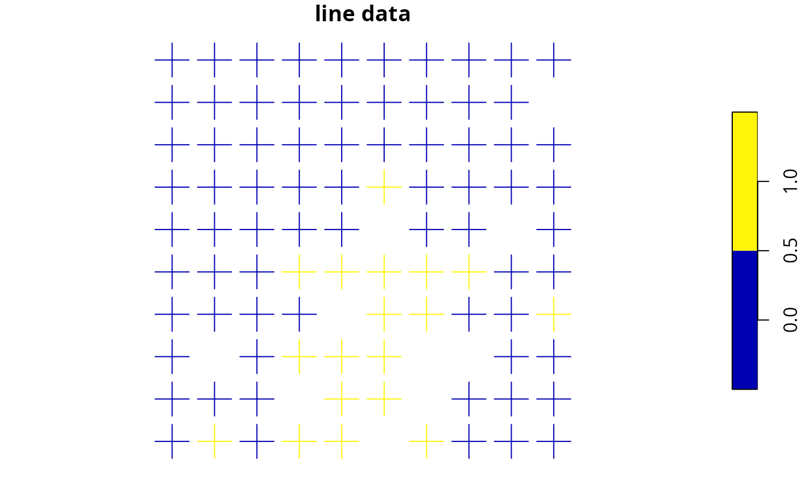
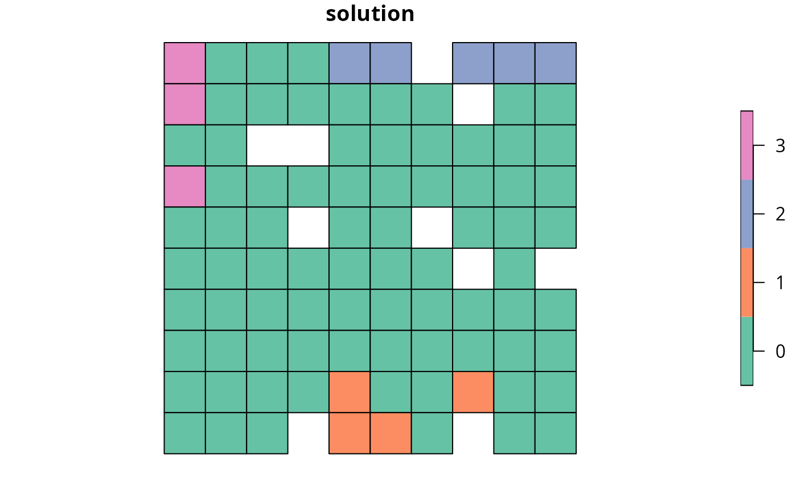
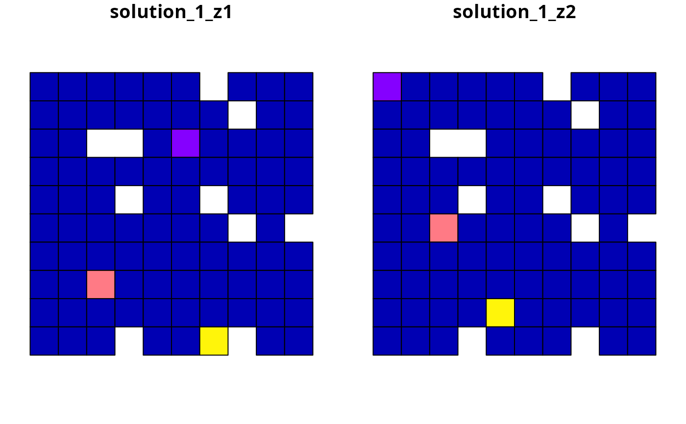
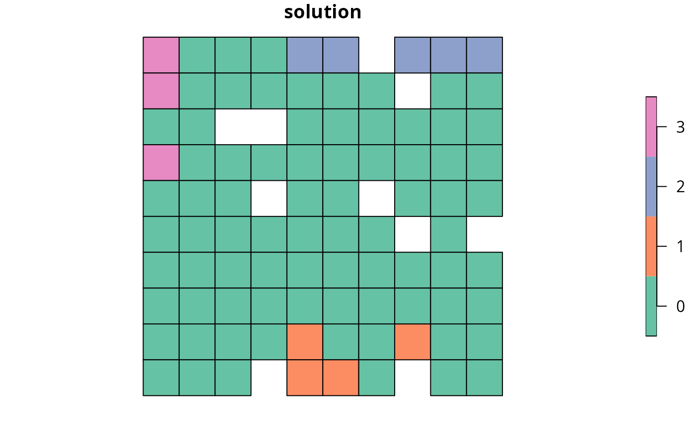
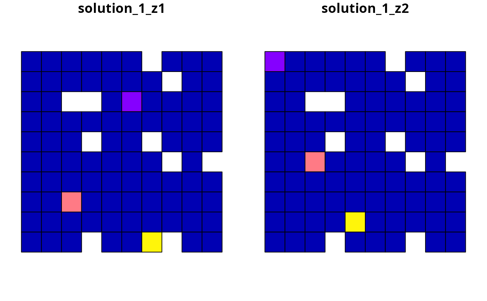

Create a systematic conservation planning problem. This function is used to
specify the basic data used in a spatial prioritization problem: the
spatial distribution of the planning units and their costs, as well as
the features (e.g., species, ecosystems) that need to be conserved. After
constructing this object, it can be
customized to meet specific goals using objectives,
targets, constraints, and
penalties. After building the problem, the
solve() function can be used to identify solutions.
Usage
problem(x, features, ...)
# S4 method for SpatRaster,SpatRaster
problem(x, features, run_checks, ...)
# S4 method for SpatRaster,ZonesSpatRaster
problem(x, features, run_checks, ...)
# S4 method for data.frame,character
problem(x, features, cost_column, ...)
# S4 method for data.frame,ZonesCharacter
problem(x, features, cost_column, ...)
# S4 method for data.frame,data.frame
problem(x, features, rij, cost_column, zones, ...)
# S4 method for numeric,data.frame
problem(x, features, rij_matrix, ...)
# S4 method for matrix,data.frame
problem(x, features, rij_matrix, ...)
# S4 method for sf,SpatRaster
problem(x, features, cost_column, run_checks, ...)
# S4 method for sf,ZonesSpatRaster
problem(x, features, cost_column, run_checks, ...)
# S4 method for sf,character
problem(x, features, cost_column, ...)
# S4 method for sf,ZonesCharacter
problem(x, features, cost_column, ...)
# S4 method for Raster,Raster
problem(x, features, run_checks, ...)
# S4 method for Raster,ZonesRaster
problem(x, features, run_checks, ...)
# S4 method for Spatial,Raster
problem(x, features, cost_column, run_checks, ...)
# S4 method for Spatial,ZonesRaster
problem(x, features, cost_column, run_checks, ...)
# S4 method for Spatial,character
problem(x, features, cost_column, ...)
# S4 method for Spatial,ZonesCharacter
problem(x, features, cost_column, ...)
# S4 method for sf,Raster
problem(x, features, cost_column, run_checks, ...)
# S4 method for sf,ZonesRaster
problem(x, features, cost_column, run_checks, ...)Arguments
- x
terra::rast(),sf::st_sf(),data.frame,matrix, ornumericvector specifying the planning units to use in the reserve design exercise and their corresponding cost. It may be desirable to exclude some planning units from the analysis, for example those outside the study area. To exclude planning units, set the cost for those raster cells toNA, or use theadd_locked_out_constraints()function.- features
The feature data can be specified in a variety of ways. The specific formats that can be used depend on the cost data format (i.e., argument to
x) and whether the problem should have a single zone or multiple zones. If the problem should have a single zone, then the feature data can be specified following:xhasterra::rast()orsf::st_sf()planning unitsThe argument to
featurescan be aterra::rast()object showing the distribution of conservation features. Missing values (i.e.,NAvalues) can be used to indicate the absence of a feature in a particular cell instead of explicitly setting these cells to zero. Note that this argument type forfeaturescan only be used to specify data for problems involving a single zone.xhassf::st_sf()ordata.frameplanning unitsThe argument to
featurescan be acharactervector with column names (fromx) that correspond to the abundance or occurrence of different features in each planning unit. Note that this argument type can only be used to create problems involving a single zone.xhasdata.frame,matrix, ornumericvector planning unitsThe argument to
featurescan be adata.frameobject containing the names of the features. Note that if this type of argument is supplied tofeaturesthen the argumentrijorrij_matrixmust also be supplied. This type of argument should follow the conventions used by Marxan, wherein each row corresponds to a different feature. It must also contain the following columns:- id
integerunique identifier for each feature These identifiers are used in the argument torij.- name
charactername for each feature.- prop
numericrelative target for each feature (optional).- amount
numericabsolute target for each feature (optional).
If the problem should have multiple zones, then the feature data can be specified following:
xhasterra::rast()orsf::st_sf()planning unitsThe argument to
featurescan be aZonesRasterobject showing the distribution of conservation features in multiple zones. As above, missing values (i.e.,NAvalues) can be used to indicate the absence of a feature in a particular cell instead of explicitly setting these cells to zero.xhassf::st_sf()ordata.frameplanning unitsThe argument to
featurescan be aZonesCharacterobject with column names (fromx) that correspond to the abundance or occurrence of different features in each planning unit in different zones.
- ...
not used.
- run_checks
logicalflag indicating whether checks should be run to ensure the integrity of the input data. These checks are run by default; however, for large datasets they may increase run time. If it is taking a prohibitively long time to create the prioritization problem, try settingrun_checkstoFALSE.- cost_column
charactername orintegerindicating the column(s) with the cost data. This argument must be supplied when the argument toxis asf::st_sf()ordata.frameobject. This argument should contain the name of each column containing cost data for each management zone when creating problems with multiple zones. To create a problem with a single zone, then set the argument tocost_columnas a single column name.- rij
data.framecontaining information on the amount of each feature in each planning unit assuming each management zone. Similar todata.framearguments forfeatures, thedata.frameobjects must follow the conventions used by Marxan. Note that the"zone"column is not needed for problems involving a single management zone. Specifically, the argument should contain the following columns:- pu
integerplanning unit identifier.- species
integerfeature identifier.- zone
integerzone identifier (optional for problems involving a single zone).- amount
numericamount of the feature in the planning unit.
- zones
data.framecontaining information on the zones. This argument is only used when argument toxandfeaturesare bothdata.frameobjects and the problem being built contains multiple zones. Following conventions used inMarZone, this argument should contain the following columns: columns:- id
integerzone identifier.- name
characterzone name.
- rij_matrix
listofmatrixorMatrix::dgCMatrixobjects specifying the amount of each feature (rows) within each planning unit (columns) for each zone. Thelistelements denote different zones, matrix rows denote features, and matrix columns denote planning units. For convenience, the argument torij_matrixcan be a singlematrixorMatrix::dgCMatrixwhen specifying a problem with a single management zone. This argument is only used when the argument toxis anumericormatrixobject.
Value
A new problem() (ConservationProblem) object.
Details
A systematic conservation planning exercise leverages data to help inform conservation decision making. To help ensure that the data -- and resulting prioritizations -- are relevant to the over-arching goals of the exercise, you should decide on the management action (or set of actions) that need be considered in the exercise. For example, these actions could include establishing protected areas, selecting land for conservation easements, restoring habitat, planting trees for carbon sequestration, eradicating invasive species, or some combination of the previous actions. If the exercise involves multiple different actions, they can be incorporated by using multiple zones (see the Management Zones vignette for details). After deciding on the management action(s), you can compile the following data.
First, you will need to create a set of planning units (i.e., discrete spatial areas) to inform decision making. Planning units are often created by subdividing a study region into a set of square or hexagonal cells. They can also be created using administrative boundaries (e.g., provinces), land management boundaries (e.g., property boundaries derived from cadastral data), or ecological boundaries (e.g., based on ecosystem classification data). The size (i.e., spatial grain) of the planning units is often determined based on a compromise between the scale needed to inform decision making, the spatial accuracy (resolution) of available datasets, and the computational resources available for generating prioritizations (e.g., RAM and number of CPU cores on your computer).
Second, you will need data to quantify the cost of implementing each management action within each planning unit. Critically, the cost data should reflect the management action(s) considered in the exercise. For example, costs are often specified using data that reflect economic expenditure (e.g., land acquisition cost), socioeconomic conditions (e.g., human population density), opportunity costs of foregone commercial activities (e.g., logging or agriculture), or opportunity costs of foregone recreational activities (e.g., recreational fishing). In some cases -- depending on the management action(s) considered -- it can make sense to use a constant cost value (e.g., all planning units are assigned a cost value equal to one) or use a cost value based on spatial extent (e.g., each planning unit is assigned a cost value based on its total area). Also, in most cases, you want to avoid negative cost values. This is because a negative value means that a place is desirable for implementing a management action, and such places will almost always be selected for prioritization even if they provide no benefit.
Third, you will need data to quantify the benefits of implementing management actions within planning units. To achieve this, you will need to select a set of conservation features that relate to the over-arching goals of the exercise. For example, conservation features often include species (e.g., Clouded Leopard), habitats (e.g., mangroves or cloud forest), or ecosystems. The benefit that each feature derives from a planning unit can take a variety of forms, but is typically occupancy (i.e., presence or absence), area of occurrence within each planning unit (e.g., based on species' geographic range data), or a measure of habitat suitability (e.g., estimated using a statistical model). After compiling these data, you have the minimal data needed to generate a prioritization.
A systematic conservation planning exercise involves prioritizing a set of management actions to be implemented within certain planning units. Critically, this prioritization should ideally optimize the trade-off between benefits and costs. To accomplish this, the prioritizr package uses input data to formulate optimization problems (see Optimization section for details). Broadly speaking, the goal of an optimization problem is to minimize (or maximize) an objective function over a set of decision variables, subject to a series of constraints. Here, an objective function specifies the metric for evaluating conservation plans. The decision variables are what we control, and usually there is one binary variable for each planning unit to specify whether that unit is selected or not (but other approaches are available, see decisions). The constraints can be thought of as rules that must be followed. For example, constraints can be used to ensure a prioritization must stay within a certain budget. These constraints can also leverage additional data to help ensure that prioritizations meet the over-arching goals of the exercise. For example, to account for existing conservation efforts, you could obtain data delineating the extent of existing protected areas and use constraints to lock in planning units that are covered by them (see add_locked_in_constraints).
Optimization
The prioritizr package uses exact algorithms to solve reserve design problems (see solvers for details). To achieve this, it internally formulates mathematical optimization problems using mixed integer linear programming (MILP). The general form of such problems can be expressed in matrix notation using the following equation.
$$\mathit{Minimize} \space \mathbf{c}^{\mathbf{T}}\mathbf{x} \space \mathit{subject \space to} \space \mathbf{Ax}\geq= or\leq \mathbf{b}$$
Here, \(x\) is a vector of decision variables, \(c\) and \(b\) are
vectors of known coefficients, and \(A\) is the constraint
matrix. The final term specifies a series of structural
constraints where relational operators for the constraint can be either
\(\ge\), \(=\), or \(\le\) the coefficients. For example, in the
minimum set cover problem, \(c\) would be a vector of costs for each
planning unit, \(b\) a vector of targets for each conservation feature,
the relational operator would be \(\ge\) for all features, and \(A\)
would be the representation matrix with \(A_{ij}=r_{ij}\), the
representation level of feature \(i\) in planning unit \(j\).
If you wish to see exactly how a conservation planning problem is
formulated as mixed integer linear programming problem, you can use
the write_problem() function to save the optimization problem
to a plain-text file on your computer and then view it using a standard
text editor (e.g., Notepad).
Please note that this function internally computes the amount of each
feature in each planning unit when this data is not supplied (using the
rij_matrix() function). As a consequence, it can take a while to
initialize large-scale conservation planning problems that involve
millions of planning units.
See also
See solve() for details on solving a problem to generate solutions.
Also, see objectives, penalties, targets, constraints,
decisions, portfolios, solvers for information on customizing problems.
Additionally, see summaries and importance for information on
evaluating solutions.
Examples
# \dontrun{
# load data
sim_pu_raster <- get_sim_pu_raster()
sim_pu_polygons <- get_sim_pu_polygons()
sim_pu_points <- get_sim_pu_points()
sim_pu_lines <- get_sim_pu_lines()
sim_features <- get_sim_features()
sim_zones_pu_raster <- get_sim_zones_pu_raster()
sim_zones_pu_polygons <- get_sim_zones_pu_polygons()
sim_zones_features <- get_sim_zones_features()
# create problem using raster planning unit data
p1 <-
problem(sim_pu_raster, sim_features) %>%
add_min_set_objective() %>%
add_relative_targets(0.2) %>%
add_binary_decisions() %>%
add_default_solver(verbose = FALSE)
# create problem using polygon planning unit data
p2 <-
problem(sim_pu_polygons, sim_features, "cost") %>%
add_min_set_objective() %>%
add_relative_targets(0.2) %>%
add_binary_decisions() %>%
add_default_solver(verbose = FALSE)
# create problem using line planning unit data
p3 <-
problem(sim_pu_lines, sim_features, "cost") %>%
add_min_set_objective() %>%
add_relative_targets(0.2) %>%
add_binary_decisions() %>%
add_default_solver(verbose = FALSE)
# create problem using point planning unit data
p4 <-
problem(sim_pu_points, sim_features, "cost") %>%
add_min_set_objective() %>%
add_relative_targets(0.2) %>%
add_binary_decisions() %>%
add_default_solver(verbose = FALSE)
# since geo-processing can be slow for large spatial vector datasets
# (e.g., polygons, lines, points), it can be worthwhile to pre-process the
# planning unit data so that it contains columns indicating the amount of
# each feature inside each planning unit
# (i.e., each column corresponds to a different feature)
# calculate the amount of each species within each planning unit
pre_proc_data <- rij_matrix(sim_pu_polygons, sim_features)
# add extra columns to the polygon planning unit data
# to indicate the amount of each species within each planning unit
pre_proc_data <- as.data.frame(t(as.matrix(pre_proc_data)))
names(pre_proc_data) <- names(sim_features)
sim_pu_polygons <- cbind(sim_pu_polygons, pre_proc_data)
# create problem using the polygon planning unit data
# with the pre-processed columns
p5 <-
problem(sim_pu_polygons, features = names(pre_proc_data), "cost") %>%
add_min_set_objective() %>%
add_relative_targets(0.2) %>%
add_binary_decisions() %>%
add_default_solver(verbose = FALSE)
# in addition to spatially explicit data, pre-processed aspatial data
# can also be used to create a problem
# (e.g., data created using external spreadsheet software)
costs <- sim_pu_polygons$cost
features <- data.frame(
id = seq_len(terra::nlyr(sim_features)),
name = names(sim_features)
)
rij_mat <- rij_matrix(sim_pu_polygons, sim_features)
p6 <-
problem(costs, features, rij_matrix = rij_mat) %>%
add_min_set_objective() %>%
add_relative_targets(0.2) %>%
add_binary_decisions() %>%
add_default_solver(verbose = FALSE)
# solve problems
s1 <- solve(p1)
s2 <- solve(p2)
s3 <- solve(p3)
s4 <- solve(p4)
s5 <- solve(p5)
s6 <- solve(p6)
# plot solutions for problems associated with spatial data
plot(s1, main = "raster data", axes = FALSE)

plot(s2[, "solution_1"], main = "polygon data")
 plot(s3[, "solution_1"], main = "line data")

plot(s4[, "solution_1"], main = "point data")
plot(s3[, "solution_1"], main = "line data")

plot(s4[, "solution_1"], main = "point data")
 plot(s5[, "solution_1"], main = "preprocessed data (polygon data)")
plot(s5[, "solution_1"], main = "preprocessed data (polygon data)")
 # show solutions for problems associated with aspatial data
str(s6)
#> num [1:90] 0 0 0 0 0 0 0 0 0 0 ...
#> - attr(*, "objective")= Named num 3617
#> ..- attr(*, "names")= chr "solution_1"
#> - attr(*, "status")= Named chr "OPTIMAL"
#> ..- attr(*, "names")= chr "solution_1"
#> - attr(*, "runtime")= Named num 0.007
#> ..- attr(*, "names")= chr "solution_1"
#> - attr(*, "gap")= Named num 0.0334
#> ..- attr(*, "names")= chr "solution_1"
# create some problems with multiple zones
# first, create a matrix containing the targets for multi-zone problems
# here each row corresponds to a different feature, each
# column corresponds to a different zone, and values correspond
# to the total (absolute) amount of a given feature that needs to be secured
# in a given zone
targets <- matrix(
rpois(15, 1),
nrow = number_of_features(sim_zones_features),
ncol = number_of_zones(sim_zones_features),
dimnames = list(
feature_names(sim_zones_features), zone_names(sim_zones_features)
)
)
# print targets
print(targets)
#> zone_1 zone_2 zone_3
#> feature_1 2 0 0
#> feature_2 1 1 2
#> feature_3 3 3 2
#> feature_4 1 2 0
#> feature_5 2 1 1
# create a multi-zone problem with raster data
p7 <-
problem(sim_zones_pu_raster, sim_zones_features) %>%
add_min_set_objective() %>%
add_absolute_targets(targets) %>%
add_binary_decisions() %>%
add_default_solver(verbose = FALSE)
# solve problem
s7 <- solve(p7)
# plot solution
# here, each layer/panel corresponds to a different zone and pixel values
# indicate if a given planning unit has been allocated to a given zone
par(mfrow = c(1, 1))
plot(s7, main = c("zone 1", "zone 2", "zone 3"), axes = FALSE)
# show solutions for problems associated with aspatial data
str(s6)
#> num [1:90] 0 0 0 0 0 0 0 0 0 0 ...
#> - attr(*, "objective")= Named num 3617
#> ..- attr(*, "names")= chr "solution_1"
#> - attr(*, "status")= Named chr "OPTIMAL"
#> ..- attr(*, "names")= chr "solution_1"
#> - attr(*, "runtime")= Named num 0.007
#> ..- attr(*, "names")= chr "solution_1"
#> - attr(*, "gap")= Named num 0.0334
#> ..- attr(*, "names")= chr "solution_1"
# create some problems with multiple zones
# first, create a matrix containing the targets for multi-zone problems
# here each row corresponds to a different feature, each
# column corresponds to a different zone, and values correspond
# to the total (absolute) amount of a given feature that needs to be secured
# in a given zone
targets <- matrix(
rpois(15, 1),
nrow = number_of_features(sim_zones_features),
ncol = number_of_zones(sim_zones_features),
dimnames = list(
feature_names(sim_zones_features), zone_names(sim_zones_features)
)
)
# print targets
print(targets)
#> zone_1 zone_2 zone_3
#> feature_1 2 0 0
#> feature_2 1 1 2
#> feature_3 3 3 2
#> feature_4 1 2 0
#> feature_5 2 1 1
# create a multi-zone problem with raster data
p7 <-
problem(sim_zones_pu_raster, sim_zones_features) %>%
add_min_set_objective() %>%
add_absolute_targets(targets) %>%
add_binary_decisions() %>%
add_default_solver(verbose = FALSE)
# solve problem
s7 <- solve(p7)
# plot solution
# here, each layer/panel corresponds to a different zone and pixel values
# indicate if a given planning unit has been allocated to a given zone
par(mfrow = c(1, 1))
plot(s7, main = c("zone 1", "zone 2", "zone 3"), axes = FALSE)
 # alternatively, the category_layer function can be used to create
# a new raster object containing the zone ids for each planning unit
# in the solution (note this only works for problems with binary decisions)
par(mfrow = c(1, 1))
plot(category_layer(s7), axes = FALSE)
# alternatively, the category_layer function can be used to create
# a new raster object containing the zone ids for each planning unit
# in the solution (note this only works for problems with binary decisions)
par(mfrow = c(1, 1))
plot(category_layer(s7), axes = FALSE)
 # create a multi-zone problem with polygon data
p8 <-
problem(
sim_zones_pu_polygons, sim_zones_features,
cost_column = c("cost_1", "cost_2", "cost_3")
) %>%
add_min_set_objective() %>%
add_absolute_targets(targets) %>%
add_binary_decisions() %>%
add_default_solver(verbose = FALSE)
# solve problem
s8 <- solve(p8)
# create column containing the zone id for which each planning unit was
# allocated to in the solution
s8$solution <- category_vector(sf::st_drop_geometry(
s8[, c("solution_1_zone_1", "solution_1_zone_2", "solution_1_zone_3")]
))
s8$solution <- factor(s8$solution)
# plot solution
plot(s8[, "solution"], axes = FALSE)

# create a multi-zone problem with polygon planning unit data
# and where columns correspond to feature abundances
# to begin with, we will add columns to the planning unit data
# that indicate the amount of each feature in each zone
sim_zones_pu_polygons$spp1_z1 <- rpois(nrow(sim_zones_pu_polygons), 1)
sim_zones_pu_polygons$spp2_z1 <- rpois(nrow(sim_zones_pu_polygons), 1)
sim_zones_pu_polygons$spp3_z1 <- rpois(nrow(sim_zones_pu_polygons), 1)
sim_zones_pu_polygons$spp1_z2 <- rpois(nrow(sim_zones_pu_polygons), 1)
sim_zones_pu_polygons$spp2_z2 <- rpois(nrow(sim_zones_pu_polygons), 1)
sim_zones_pu_polygons$spp3_z2 <- rpois(nrow(sim_zones_pu_polygons), 1)
# create problem with polygon planning unit data and use column names
# to indicate feature data
# additionally, to make this example slightly more interesting,
# the problem will have proportion-type decisions such that
# a proportion of each planning unit can be allocated to each of the
# two management zones
p9 <-
problem(
sim_zones_pu_polygons,
zones(
c("spp1_z1", "spp2_z1", "spp3_z1"),
c("spp1_z2", "spp2_z2", "spp3_z2"),
zone_names = c("z1", "z2")
),
cost_column = c("cost_1", "cost_2")
) %>%
add_min_set_objective() %>%
add_absolute_targets(targets[1:3, 1:2]) %>%
add_proportion_decisions() %>%
add_default_solver(verbose = FALSE)
# solve problem
s9 <- solve(p9)
# plot solution
plot(s9[, c("solution_1_z1", "solution_1_z2")], axes = FALSE)

# }
# create a multi-zone problem with polygon data
p8 <-
problem(
sim_zones_pu_polygons, sim_zones_features,
cost_column = c("cost_1", "cost_2", "cost_3")
) %>%
add_min_set_objective() %>%
add_absolute_targets(targets) %>%
add_binary_decisions() %>%
add_default_solver(verbose = FALSE)
# solve problem
s8 <- solve(p8)
# create column containing the zone id for which each planning unit was
# allocated to in the solution
s8$solution <- category_vector(sf::st_drop_geometry(
s8[, c("solution_1_zone_1", "solution_1_zone_2", "solution_1_zone_3")]
))
s8$solution <- factor(s8$solution)
# plot solution
plot(s8[, "solution"], axes = FALSE)

# create a multi-zone problem with polygon planning unit data
# and where columns correspond to feature abundances
# to begin with, we will add columns to the planning unit data
# that indicate the amount of each feature in each zone
sim_zones_pu_polygons$spp1_z1 <- rpois(nrow(sim_zones_pu_polygons), 1)
sim_zones_pu_polygons$spp2_z1 <- rpois(nrow(sim_zones_pu_polygons), 1)
sim_zones_pu_polygons$spp3_z1 <- rpois(nrow(sim_zones_pu_polygons), 1)
sim_zones_pu_polygons$spp1_z2 <- rpois(nrow(sim_zones_pu_polygons), 1)
sim_zones_pu_polygons$spp2_z2 <- rpois(nrow(sim_zones_pu_polygons), 1)
sim_zones_pu_polygons$spp3_z2 <- rpois(nrow(sim_zones_pu_polygons), 1)
# create problem with polygon planning unit data and use column names
# to indicate feature data
# additionally, to make this example slightly more interesting,
# the problem will have proportion-type decisions such that
# a proportion of each planning unit can be allocated to each of the
# two management zones
p9 <-
problem(
sim_zones_pu_polygons,
zones(
c("spp1_z1", "spp2_z1", "spp3_z1"),
c("spp1_z2", "spp2_z2", "spp3_z2"),
zone_names = c("z1", "z2")
),
cost_column = c("cost_1", "cost_2")
) %>%
add_min_set_objective() %>%
add_absolute_targets(targets[1:3, 1:2]) %>%
add_proportion_decisions() %>%
add_default_solver(verbose = FALSE)
# solve problem
s9 <- solve(p9)
# plot solution
plot(s9[, c("solution_1_z1", "solution_1_z2")], axes = FALSE)

# }